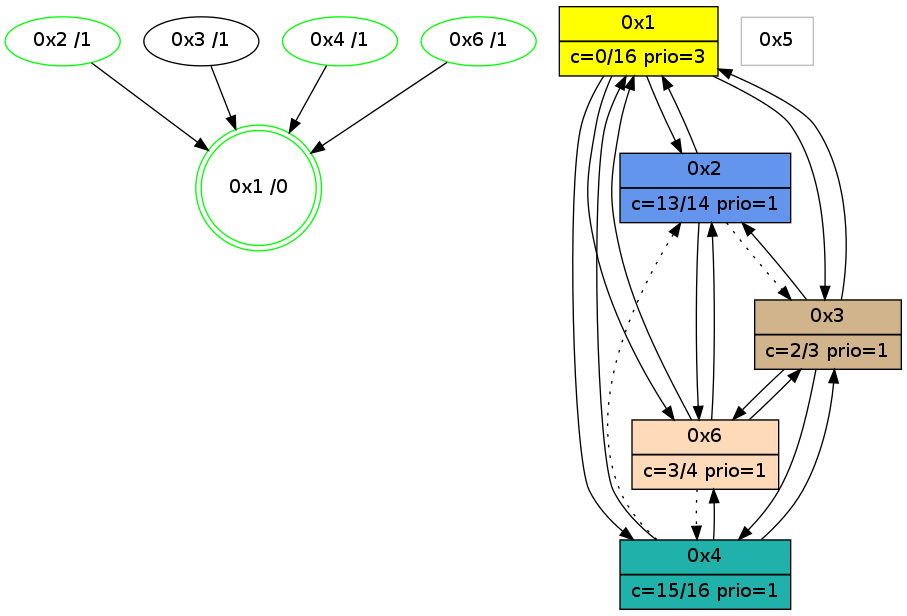

>> << IDX [start] -100 -25 -5 +0 +5 +25 [1170.12913704]
 Previous packets
----------------------------------------------------------------------
1165.106603 beacon01(adaf) #0 coord=01,02,05,03,04,06 cycle=944.0ms assoc
-- color-indic=0 64 f6 b3
1165.116564 beacon02(adaf) #0 coord=01,02,05,03,04,06 cycle=944.0ms assoc 64 a7 4c
1165.126565 beacon05(adaf) #0 coord=01,02,05,03,04,06 cycle=944.0ms assoc 64 01 66
1165.136564 beacon03(adaf) #0 coord=01,02,05,03,04,06 cycle=944.0ms assoc 64 9d 42
1165.146565 beacon04(adaf) #0 coord=01,02,05,03,04,06 cycle=944.0ms assoc 64 3b 68
1165.156566 beacon06(adaf) #0 coord=01,02,05,03,04,06 cycle=944.0ms assoc 64 4f 74
1165.168253 [Hello(3): seq=955 sym=6,1,4 color=2 sysInfo=hasWarning,MaxColorIndicationCalled,ColoringModeIndicationCalled,MaxColorResponseCalled stat=6:0,0,0,0/1:3,15,7,1/4:1,10,2,1]
1165.171960 [Hello(6): seq=870 sym=3,1,2 asym=4 color=3 sysInfo=hasWarning,MaxColorIndicationCalled,ColoringModeIndicationCalled,MaxColorResponseCalled stat=3:2,0,2,0/1:14,13,3,0/2:6,0,2,0/4:2,5,6,1]
----------------------------------------------------------------------
1166.111112 beacon01(adaf) #0 coord=01,02,05,03,04,06 cycle=944.0ms assoc
-- color-indic=0 64 bb b4
1166.121072 beacon02(adaf) #0 coord=01,02,05,03,04,06 cycle=944.0ms assoc 64 ea 4b
1166.131073 beacon05(adaf) #0 coord=01,02,05,03,04,06 cycle=944.0ms assoc 64 4c 61
1166.141072 beacon03(adaf) #0 coord=01,02,05,03,04,06 cycle=944.0ms assoc 64 d0 45
1166.151073 beacon04(adaf) #0 coord=01,02,05,03,04,06 cycle=944.0ms assoc 64 76 6f
1166.161073 beacon06(adaf) #0 coord=01,02,05,03,04,06 cycle=944.0ms assoc 64 02 73
1166.172563 [Hello(1): seq=858 sym=2,6,3 color=0 sysInfo=hasWarning,MaxColorIndicationCalled,MaxColorResponseCalled,MaxColorRequestCalled,ColoringModeRequestCalled stat=2:11,3,2,0/6:14,2,7,0/3:7,0,4,0]
1166.176437 [Hello(4): seq=957 sym=1,3,6 sysInfo=hasWarning,MaxColorIndicationCalled,ColoringModeIndicationCalled,MaxColorResponseCalled stat=1:5,11,10,0/3:8,0,1,0/6:3,0,1,0]
1166.178237 [Hello(2): seq=1443 sym=6,1 asym=3 color=13 sysInfo=hasWarning,MaxColorIndicationCalled,ColoringModeIndicationCalled,MaxColorResponseCalled stat=6:4,0,1,0/1:7,7,9,0/3:4,0,1,0]
----------------------------------------------------------------------
1167.115618 beacon01(adaf) #0 coord=01,02,05,03,04,06 cycle=944.0ms assoc
-- color-indic=0 64 7f db
1167.125579 beacon02(adaf) #0 coord=01,02,05,03,04,06 cycle=944.0ms assoc 64 2e 24
1167.135580 beacon05(adaf) #0 coord=01,02,05,03,04,06 cycle=944.0ms assoc 64 88 0e
1167.145579 beacon03(adaf) #0 coord=01,02,05,03,04,06 cycle=944.0ms assoc 64 14 2a
1167.155580 beacon04(adaf) #0 coord=01,02,05,03,04,06 cycle=944.0ms assoc 64 b2 00
1167.165580 beacon06(adaf) #0 coord=01,02,05,03,04,06 cycle=944.0ms assoc 64 c6 1c
1167.177277 [Hello(3): seq=956 sym=6,2,1,4 color=2 sysInfo=hasWarning,MaxColorIndicationCalled,ColoringModeIndicationCalled,MaxColorResponseCalled stat=6:1,0,0,0/2:0,0,0,0/1:4,15,7,1/4:2,10,2,1]
----------------------------------------------------------------------
1168.120122 beacon01(adaf) #0 coord=01,02,05,03,04,06 cycle=944.0ms assoc
-- color-indic=0 64 33 6b
1168.130083 beacon02(adaf) #0 coord=01,02,05,03,04,06 cycle=944.0ms assoc 64 62 94
1168.140084 beacon05(adaf) #0 coord=01,02,05,03,04,06 cycle=944.0ms assoc 64 c4 be
1168.150084 beacon03(adaf) #0 coord=01,02,05,03,04,06 cycle=944.0ms assoc 64 58 9a
1168.160085 beacon04(adaf) #0 coord=01,02,05,03,04,06 cycle=944.0ms assoc 64 fe b0
1168.170084 beacon06(adaf) #0 coord=01,02,05,03,04,06 cycle=944.0ms assoc 64 8a ac
1168.181823 [Hello(4): seq=958 sym=1,3,6 asym=2 sysInfo=hasWarning,MaxColorIndicationCalled,ColoringModeIndicationCalled,MaxColorResponseCalled stat=1:5,11,10,0/3:9,0,1,0/6:3,0,1,0/2:0,0,0,0]
1168.189112 [Hello(1): seq=859 sym=2,4,6,3 color=0 sysInfo=hasWarning,MaxColorIndicationCalled,MaxColorResponseCalled,MaxColorRequestCalled,ColoringModeRequestCalled stat=2:12,3,2,0/4:0,0,0,0/6:15,2,7,0/3:7,0,4,0]
1168.192884 [STC(1) #0.208 new-neigh,tree-change,inconsistent-stability,stable,to-color d=0]
----------------------------------------------------------------------
1169.124631 beacon01(adaf) #0 coord=01,02,05,03,04,06 cycle=944.0ms assoc
-- color-indic=0 64 f7 04
1169.134593 beacon02(adaf) #0 coord=01,02,05,03,04,06 cycle=944.0ms assoc 64 a6 fb
1169.144592 beacon05(adaf) #0 coord=01,02,05,03,04,06 cycle=944.0ms assoc 64 00 d1
1169.154593 beacon03(adaf) #0 coord=01,02,05,03,04,06 cycle=944.0ms assoc 64 9c f5
1169.164592 beacon04(adaf) #0 coord=01,02,05,03,04,06 cycle=944.0ms assoc 64 3a df
1169.174593 beacon06(adaf) #0 coord=01,02,05,03,04,06 cycle=944.0ms assoc 64 4e c3
1169.186169 [STC(4)->1 #0.208 new-neigh,tree-change,inconsistent-stability,stable,to-color d=1]
1169.190184 [Hello(3): seq=957 sym=6,2,1,4 color=2 sysInfo=hasWarning,MaxColorIndicationCalled,ColoringModeIndicationCalled,MaxColorResponseCalled stat=6:1,0,0,0/2:0,0,0,0/1:5,15,8,1/4:2,10,2,1]
1169.193948 [STC(3)->1 #0.208 new-neigh,tree-change,inconsistent-stability,to-color d=1]